Einführung in R und Quarto
Final Session!
Dynamic Documents with R Markdown
Work flow
The normal work flow:
- R script which contains the R code that produces,
- Our R output: Figures and Tables,
- An MS Word document, which is the report describing our results.
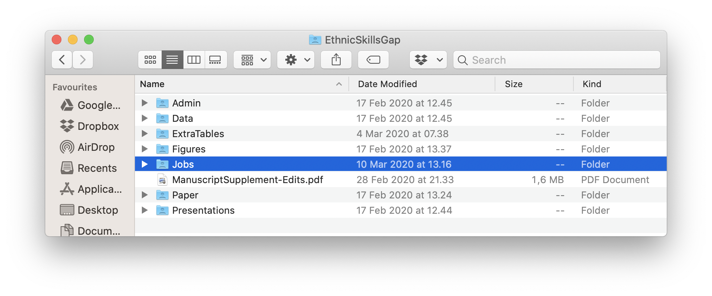
. . .
It’s disadvantages:
- Every time the output changes, we have to revise the Word document.
- If we comment our R code a lot (as is good practice), we have excessive
#, and much will be repeated in the ‘Data and Methods’ section of the Word document.
\(\rightarrow\) R Markdown combines R and Markdown to overcome these limitations.
MS Word versus Markdown
Word is a so-called ‘What You See is What You Get’ text editor. That is, you edit your text and it looks just like the final formatted document.
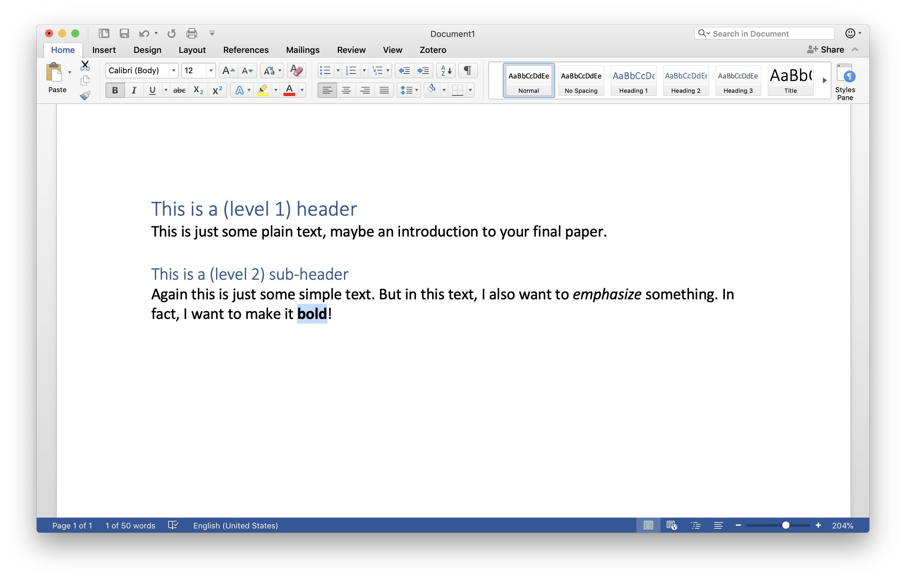
. . .
Markdown separates text editing in source files, from the resulting formatted output. The source files contain your text and very simple formatting commands:
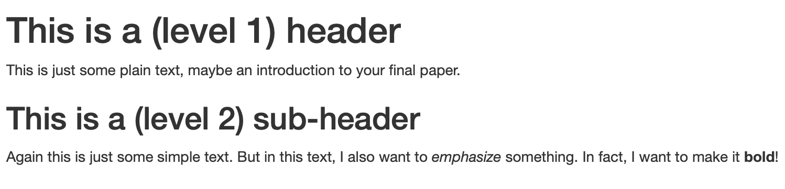
R Markdown
R Markdown allows you to insert R code chunks into your Markdown source file:
# This is a (level 1) header
This is just some plain text, maybe an introduction
to your final paper.
## This is a (level 2) sub-header
Again this is just some simple text. But in this text,
I also want to *emphasize* something. In fact, I want
to make it **bold**!
And this is some R code:
```r
mean(c(1, 2, 3, NA), na.rm = TRUE)
```. . .
When you turn the source file into a formatted output, the R code will be evaluated and with its output, nicely rendered and inserted into your formatted document:
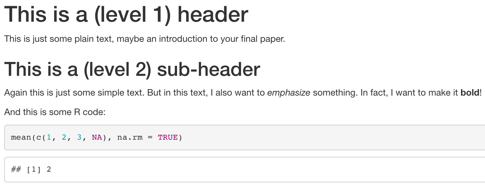
Getting started with R Markdown
Getting started with R Markdown
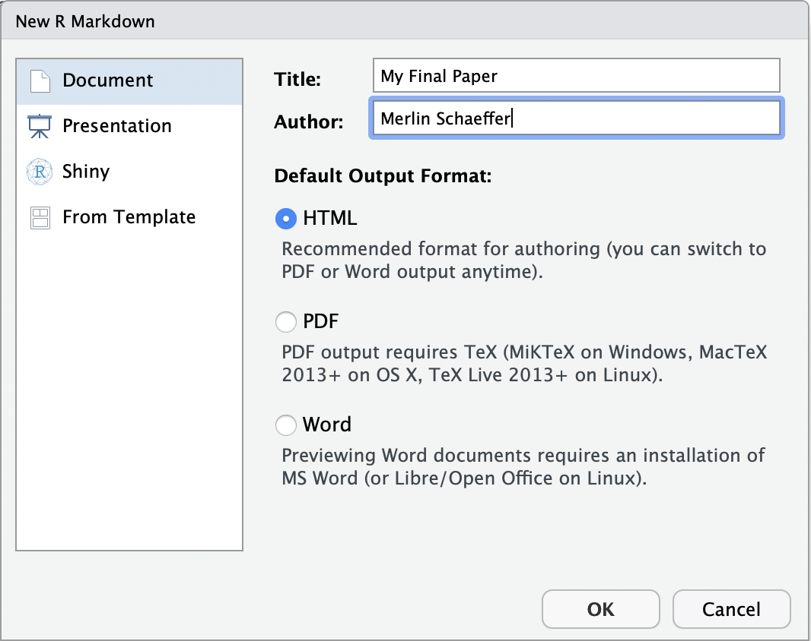
Getting started with R Markdown
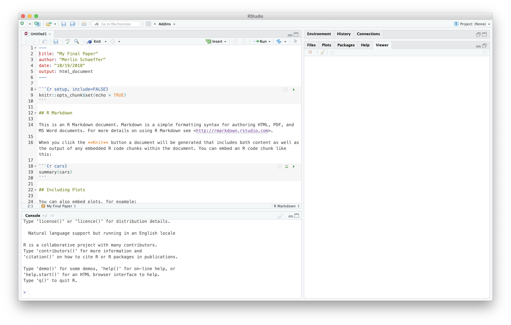
Klick ‘Knit’ to compile

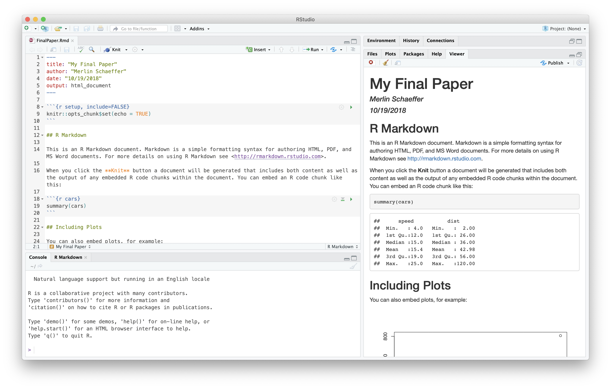
What happens in the background

Four remaining topics
- Markdown formatting commands,
- R Code chunk options,
- The YAML header (e.g., how to produce a word file),
- Citation.
Markdown formatting commands
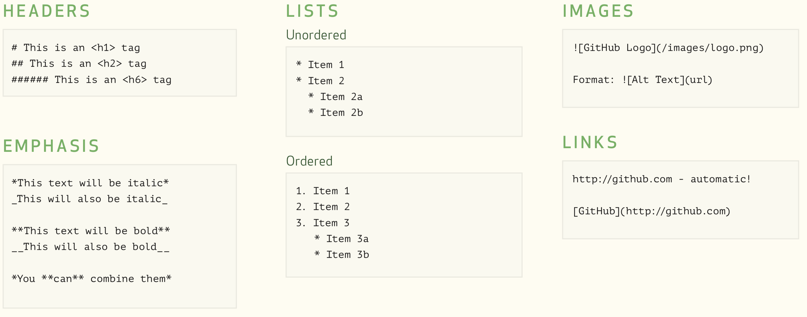
Exercise 1 (20 Minutes)
Revise your R Markdown template to a draft of your final paper:
- Delete the template text.
- Add a brief intro about the topic of your final paper (see Exam) to the R Markdown document.
- Give that paragraph the heading “Introduction”.
- Use Markdown code to emphasize what your outcome is.
- Make a list of some of the the predictor variables you consider to investigate.
- Mention that you will analyze the ESS and embed a link to the project homepage.
- Knit it.
R code chunks
You can initiate an R code chunk with \(\rightarrow\)
Everything between ```{r} … ``` is evaluated as R code. Moreover, results produced by that R code are pasted into your document.
R output can be customized with chunk options, which you can add to the initiation:
```{r, echo = FALSE, message = FALSE, warning = FALSE}
include = FALSEprevents code and results from appearing in the final document, although R will evaluate the code.echo = FALSEprevents code, but not the results from appearing in the finished file.message = FALSEprevents messages that are generated by code from appearing in the final document.warning = FALSEprevents warnings that are generated by code from appearing in the final document.
Further important R code chunks
Options for (regression) tables as output:
results = 'asis'prevents Knitr from further processing the R output. This is necessary, for instance, when you generate an html regression table with ‘texreg’. Note that this will not work with a Word document as output.
Options for figures as output:
out.width = "90%"size of the figure in % of the width of your document.fig.align = "center"centers the figure in the middle of the document. Alternatives are"left"or"right".fig.cap = "This is my beautiful figure"adds a caption to the figure.dpi = 200defines pixel resolution of the figure.fig.width = 8defines the width of the figure in inches.fig.height = 4defines the height of the figure in inches.
Exercise 2 (15 Minutes)
Add three R code chunks to your final paper:
- Add a code chunk that loads the libraries that you are going to use. Make sure that R evaluates the chunk, but that it gives no warnings, no messages, etc..
- Add a chunk that downloads the ESS data pipes it into a
transmute()and performs some initial recodings. - Add a code chunk that adds a figure (histogram or scatter plot) to your final document.
The YAML header (Meta data for your document)
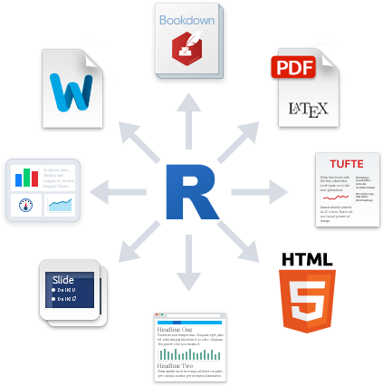
Among others, the following additional output formats are available:
pdf_documentcreates a PDF via LaTeX, which you will need to install. RStudio will prompt you if you don’t already have it.word_documentfor Microsoft Word documents (.docx).odt_documentfor Open Document Text (.odt).rtf_documentfor Rich Text Format (.rtf).
The YAML header (Meta data for your document)
You might even try out Presentations:
ioslides_presentationmakes HTML presentation with ioslides.slidy_presentationmakes HTML presentation with W3C Slidy.beamer_presentationmakes a PDF presentation with LaTeX Beamer (if you have installed Latex).powerpoint_presentationmakes an MS PowerPoint presentation.
--- defines the beginning of a new slide.
I personally use Xaringan to make these slides.
Citation
If you do not work with any software to manage your literature yet, start using (open source) Zotero!

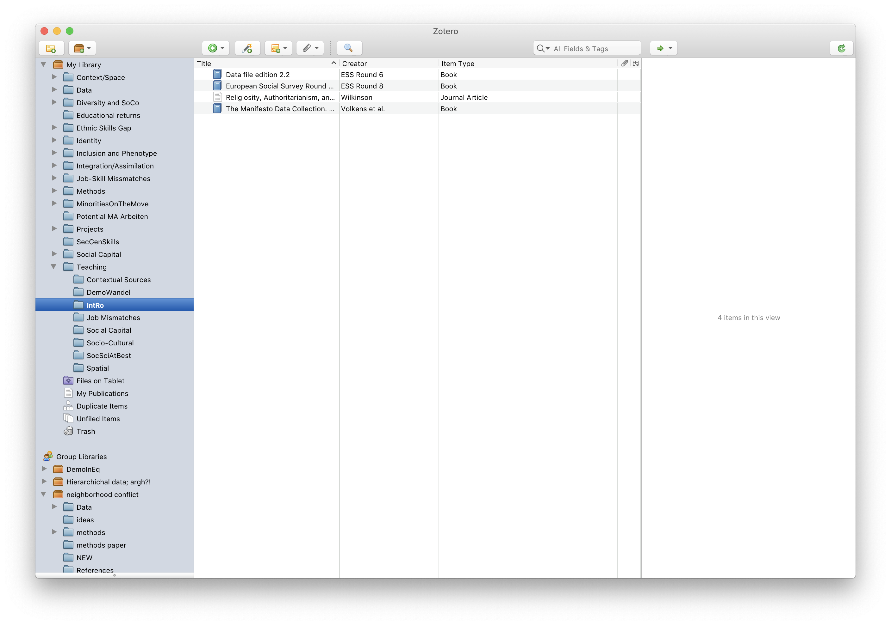
Citation (Export your references as ‘Bibtex’ file)
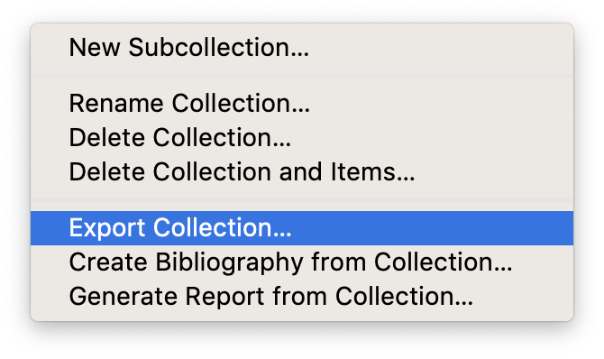
Citation (Export your references as ‘Bibtex’ file)
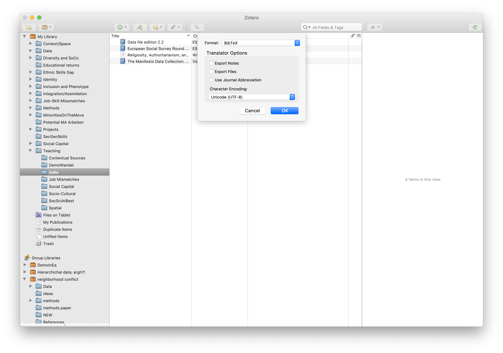
Citation (Export your references as ‘Bibtex’ file)
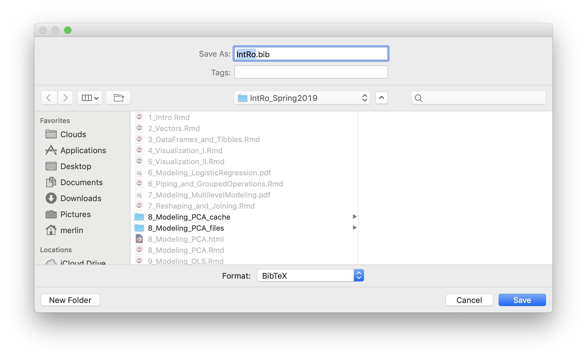
Citation (Export your references as ‘Bibtex’ file)
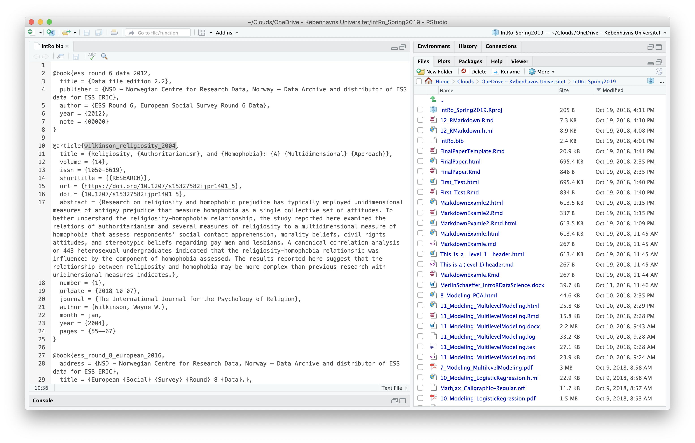
In-text citation and list of references
Add Bibtex file as bibliography to your YAML header:
Literatur
Thank you for a fun course!